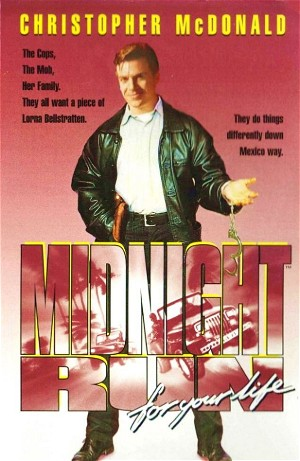

Midnight Run for Your Life (1994)
ActionAdventureComedyTV Movie
| Year | 1994 |
|---|---|
| Rating | R |
| Genre | Action, Adventure, Comedy, TV Movie |
When an accused murderer flees to Cabo San Lucas, Mexico, bounty hunter Jack Walsh is hired to bring her back, unaware that the police, a hitman and a dangerous drug lord are hot on his trail.